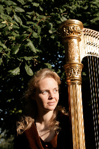
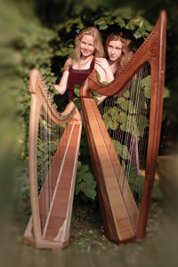
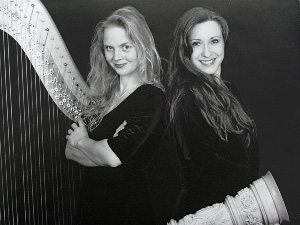
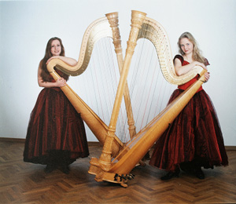
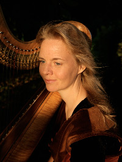
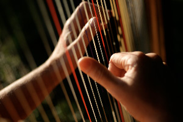
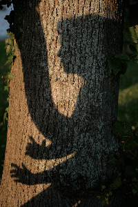
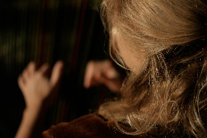

Start | Biografie | CDs | Galerie | Programme | Presse | Termine | Unterricht | Kontakt
|  |
|
Klingt meine Linde
Eines der anrührendsten Märchen der berühmten schwedischen Kinderbuchautorin Astrid Lindgren, eingebettet in schwedische Volksweisen.
|  |
|
Von Elfen, Feen und Menschen
Märchen und Musik von der grünen Insel
Wie fängt man eine Fee? Dies – und viele weitere Geheimnisse – erfahren Sie in diesem Programm. Elke Steltner und Eva Curth präsentieren die schönsten irischen Melodien auf zwei Harfen sowie Märchen und Gedichte aus dem reichen Schatz der traditionellen Erzählungen über zauberhafte Wesenheiten der Insel.
|  |
|
Konzert für 2 Harfen
Dieses im Gegensatz zu den beiden vorigen rein instrumentale Programm deckt die ganze Bandbreite des klassischen Harfenrepertoires ab: von Händel über Spohr, Saint-Saëns, Ravel bis Salzedo werden Werke von Komponisten des Barock, der Spätklassik, des französischen Impressionismus bis zur Moderne dargeboten.
|  |
|
Auf Schmetterlings’ Flügeln
Musikalischer und poetischer Falterzauber auf zwei Harfen
Sehnsucht nach dem Frühling? Dann dürfen Sie Ihre Vorfreude mit dem folgenden Konzert bestärken: Mit "Auf Schmetterlings' Flügeln" präsentieren die Harfenspielerinnen Eva Ignatjeva und Elke Steltner musikalischen und poetischen Falterzauber. Zu genießen gibt es u.a. Musik von Mendelssohn, Prokofieff, Satie und ABBA sowie Texte von Eric Carle, Johann Gottfried Herder, Hermann Hesse, Rainer Maria Rilke und Wilhem Busch. Die Kombination aus Musik und Texten möchte die Schwerelosigkeit und zugleich die Bedeutung des Schmetterlings als Motiv in der Kunst einfangen, wo er als Hüter der Kindheit, Kavalier der Blumen, flatterhafter Liebhaber und Verführer, als Glücksgeist und Symbol alles Vergänglichen auftritt. Auch hier gilt: Kinder jeden Alters sind willkommen!
 |
|
Undinensang und Harfenklang
Aus der geheimnisvollen Unterwasserwelt der Meerjungfrauen und Nixen.
Lorelei, Russalka, Melusine, Undine, Rautendelein, die Seehundjungfrau Selkie und die kleine Meerjungfrau – sie hat viele Namen und Gestalten, die unheimliche Zauberin aus dem Meer. Immer sucht sie den Weg in unsere Welt, liebt und leidet oder lässt leiden. Und in ihrem Verlangen nach einer menschlichen Seele führt sie uns selbst auf den Grund unserer tiefen und verborgenen Wünsche.
|  |
|
Wenn du geredet hättest, Desdemona
Ungehaltene Reden ungehaltener Frauen
Von Christine Brückner in einer Bearbeitung von Gabriele Nickolmann
Gabriele Nickolmann und Elke Steltner nehmen das Publikum mit an den Ort, an dem Frauen Reden halten, die tatsächlich nie zu hören waren. [...]
In den ungehaltenen Reden ungehaltener Frauen entwerfen sie, liebevoll untermalt von alter und neuer Harfenmusik, 4 packende Gesprächssituationen: Christiane Vulpius im Vorzimmer der Frau von Stein, Effi Briest im Gespräch mit ihrem tauben Hund Rollo, Lysistrate, die Frauen von Athen und die große Idee, den Männern mit körperlichen Reizen, Fürsorge und Liebe das Kämpfen zu verleiden - und Desdemona im Schlafzimmer mit Othello, in leidenschaftlicher Verteidigung ihres Lebens und ihres Taschentuches...
 |
|
Klang der Stille
"Erst in der Stille beginnt man zu hören. Erst wenn die Sprache verstummt, beginnt man zu sehen."
Wie klingt Stille? Was macht ihr Wesen aus? Auf ihrem neuen Album lässt Elke Steltner Dichter, Musiker, Philosophen und Wissenschaftler der verschiedensten Schulen und Richtungen dieser Frage nachgehen. Ihre Gedanken zur Stille werden verbunden durch Musik für Harfe Solo von B. Smetana, B. Britten, E. Satie, J. Massenet, C. Salzedo, M. Grandjany, R. Oppermann und A. Pärt. Musik, die in die Stille führt und sie vertieft. Eine stille Stunde, die Innenräume öffnet und zum Klingen bringt.
|  |
|
»Am Anfang war ein großer Gesang«
Schöpfungsgeschichten der Welt von Australien bis Japan, biblisch und phantastisch - mit Musik für Harfe solo von Salzedo, Tournier, Britten, Grandjany, Arvo Pärt u. a.
|  |
|
»Die Prinzessin und der Mond«
Ein Märchen mit Musik für kleine Leute.
»Sonne, Mond und goldenes Haar«
Märchen und Musik für Kinder.
|  |
|
»Gelassen stieg die Nacht ans Land«
Von Nachtwesen, Mondschein und Sternengesang.
Texte von Goethe, Eichendorff, Mörike, Heine u.a.
Volkslieder und Musik von Beethoven, Debussy, Salzedo u.a.